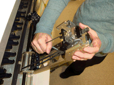

Removing Gripper Sensors
-
Open the SPU.

The SPU is hinged on the left side. The right side is released and can be swung out from the instrument to approximately 45 degrees.
-
Loosen the locking screw.
The locking screw prevents the SPU from swinging outward from the instrument. It is not necessary to remove the screw because the SPU plate is slotted.

-
Pull the spring-loaded captive pin that holds the panel (located under the SPU) to the frame.

-
(For China and Canada Only.) On the front facing the edge of the Framus assembly, install the Chinese and French labels adjacent to the existing English label.
Note: The labels are in the DxI Installation Kit.

-
Loosen the locking screw.
-
Remove the sensors.
-
Remove the sensors.
- If round sensors are replacing rectangle sensors, remove the entire black gripper mounting block, flag, and sensors.
- Remove the 4 screws (7/64-inch) securing the Z motor mount to the module. The screws are located on the inside wall in the lower right corner of the module.

- Hold the gripper gantry with your left hand, while twisting the z-drive motor with your right hand and pulling the entire assembly towards the right. After the left-side bearing of the assembly is clear of the side plate, the gripper gantry will drop enough to clear the red linear bushing.
- Gently handle the z-axis drive shaft. Position the z-axis motor assembly to prevent bending the shaft.
- Tilt the gripper gantry outward, to allow access to the gripper.

- Remove the gripper (two 8-mm screws). Do not lose the shims.
- Remove the gripper flag (one 3/32-in screw).
- Remove the black gripper mounting block that holds the gripper (four 5/64-in screws).
- Remove the 4 screws (7/64-inch) securing the Z motor mount to the module. The screws are located on the inside wall in the lower right corner of the module.
- If the new sensor is the same shape as the old sensor, then remove the sensors from the gripper. Do not remove the gripper.
- Move the gripper to the upper center of the module.
- Remove the sensors from the gripper.
- If the sensors are rectangular, remove the sensor mounting bracket from the bottom of the gripper (two screws).
If the sensors are round, loosen the outer two screws on the sensor mounting bracket.
- If the sensors are rectangular, remove the sensor mounting bracket from the bottom of the gripper (two screws).
- If round sensors are replacing rectangle sensors, remove the entire black gripper mounting block, flag, and sensors.
-
Remove the sensors.